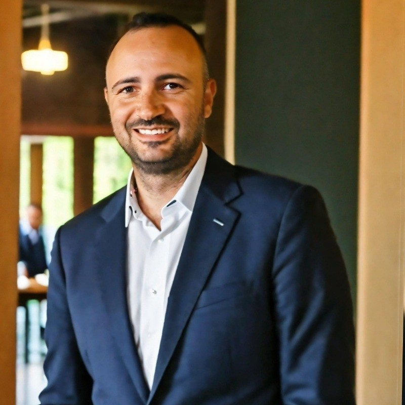

Donato Pasqualicchio
To be announced. The title of the talk will be published here once it is finalized.
To be announced. A short abstract will be added ahead of the workshop.
Donato Pasqualicchio has spent the past 25 years making technology useful and, occasionally, stopping it from making life more complicated. An Azure Solution Specialist at Microsoft and former Senior Cloud Solution Architect, he helps organisations turn ambitious cloud and AI ideas into solutions that work in the real world.
He has been working with AI since the days when most people looked at it like cows watching a passing train: puzzled, slightly suspicious, and unsure why it mattered. His experience spans machine learning, NLP, computer vision, conversational systems, and generative AI.
Donato was among the contributors who shaped Microsoft’s Responsible AI strategy and has spoken at numerous Microsoft events about AI, cloud transformation, governance, and responsible innovation.
He believes in “productive laziness”: automate repetitive work, reuse what works, and save human creativity for problems that genuinely deserve it.
The invited talk is scheduled for 45 minutes, including Q&A.